조경기능사 (2014-04-06 기출문제)
1과목: 조경일반
1. 그림과 같이 AOB 직각을 3등분 할 때 다음 중 선의 길이가 같지 않은 것은?
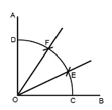
- CF
- EF
- OD
- OC
(정답률: 92%)

2. 다음 중 묘원의 정원에 해당하는 것은?
- 타지마할
- 알함브라
- 공중정원
- 보르비꽁트
(정답률: 86%)
3. 다음 중 위요된 경관(enclosed landscape)의 특징 설명으로 옳은 것은?
- 시선의 주의력을 끌 수 있어 소규모의 지형도 경관으로서 의의를 갖게 해준다.
- 보는 사람으로 하여금 위압감을 느끼게 하며 경관의 지표가 된다.
- 확 트인 느낌을 주어 안정감을 준다.
- 주의력이 없으면 등한시 하기 쉬운 것이다.
(정답률: 77%)
4. 실물을 도면에 나타낼 때의 비율을 무엇이라 하는가?
- 범례
- 표제란
- 평면도
- 축척
(정답률: 91%)
5. 고려시대 조경수법은 대비를 중요시 하는 양상을 보인다. 어느시대의 수법을 받아 들였는가?
- 신라시대 수법
- 일본 임천식 수법
- 중국 당시대 수법
- 중국 송시대 수법
(정답률: 85%)
6. 다음 설명의 A,B에 적합한 용어는?
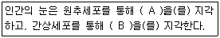
- A : 색채, B : 명암
- A :밝기 , B : 채도
- A : 명암, B : 색채
- A :밝기 , B : 색조
(정답률: 67%)
7. 다음 설명의 ( )에 들어갈 각각의 용어는?
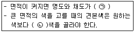
- (ㄱ) 높아진다 (ㄴ) 밝고 선명한
- (ㄱ) 높아진다 (ㄴ) 어둡고 탁한
- (ㄱ) 낮아진다 (ㄴ) 밝고 선명한
- (ㄱ) 낮아진다 (ㄴ) 어둡고 탁한
(정답률: 66%)
8. 주로 장독대, 쓰레기통, 빨래건조대 등을 설차하는 주택정원 의 적합 공간은?
- 안뜰
- 앞뜰
- 작업뜰
- 뒤뜰
(정답률: 82%)
9. 그림과 같은 축도기호가 나타내고 있는 것으로 옳은 것은?
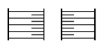
- 등고선
- 성토
- 절토
- 과수원
(정답률: 77%)
10. 1857년 미국 뉴욕에 중앙공원(Central park)를 설계한 사람은?
- 하워드
- 르코르뷔지에
- 옴스테드
- 브라운
(정답률: 89%)
11. 어떤 두 색이 맞붙어 있을 때 그 경계 언저리에 대비가 더 강하게 일어나는 현상은?
- 연변대비
- 면적대비
- 보색대비
- 한난대비
(정답률: 64%)
12. 넓은 의미로의 조경을 가장 잘 설명한 것은?
- 기술자를 정원사라 부른다.
- 궁전 또는 대규모 저택을 중심으로 한다.
- 식재를 중심으로 한 정원을 만드는 일에 중점을 둔다.
- 정원을 포함한 광범위한 옥외공간 건설에 적극 참여 한다.
(정답률: 90%)
13. 먼셀표색계의 10색상환에서 서로 마주보고 있는 색상의 짝이 잘못 연결된 것은?
- 빨강(R) - 청록(BG)
- 노랑(Y) - 남색(PR)
- 초록(G) - 자주(RP)
- 주황(YR) - 보라(P)
(정답률: 70%)
14. 다음의 입체도에서 화살표 방향을 정면으로 할 때 평면도를 바르게 표현한 것은?
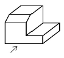
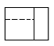
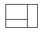
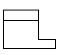
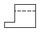
(정답률: 71%)
15. 조경미의 원리 중 대비가 불러오는 심리적 자극으로 가장 거리가 먼 것은?
- 반대
- 대립
- 변화
- 안정
(정답률: 78%)
2과목: 조경재료
16. 가로수가 갖추어야 할 조건이 아닌 것은?
- 공해에 강한 수목
- 답압에 강한 수목
- 지하고가 낮은 수목
- 이식에 잘 적응하는 수목
(정답률: 91%)
17. 플라스틱의 장점에 해당하지 않는 것은?
- 가공이 우수하다.
- 경랑 및 착색이 용이하다.
- 내수 및 내식성이 강하다.
- 전기 절연성이 없다.
(정답률: 80%)
18. 열경화성 수지의 설명으로 틀린 것은?
- 축합반응을 하여 고분자로 된 것이다.
- 다시 가열하는 것이 불가능하다
- 성형품은 용제에 녹지 않는다.
- 불소수지와 폴리에틸렌수지 등으로 수장재로 이용된다.
(정답률: 58%)
19. 시멘트의 종류 중 혼합 시멘트에 속하는 것은?
- 팽창 시멘트
- 알루미나 시멘트
- 고로슬래그 시멘트
- 조강포틀랜드 시멘트
(정답률: 69%)
20. 이팝나무와 조팝나무에 대한 설명으로 옳지 않은 것은?
- 이팝나무의 열매는 타원형의 핵과이다.
- 환경이 같다면 이팝나무가 조팝나무 보다 꽃이 먼저 핀다.
- 과명은 이팝나무는 물푸레나무과(科)이고, 조팝나무는 장미과(科)이다
- 성상은 이팝나무는 낙엽활엽교목이고 ,조팝나무는 낙엽활엽관목이다.
(정답률: 72%)
21. 목재의 방부재(preservate)는 유성, 수용성, 유용성으로 크게 나눌 수 있다. 유용성으로 방부력이 대단히 우수하고 열이나 약제에도 안정적이며 거의 무색제품으로 사용되는 약제는?
- Pcp
- 염화아연
- 황산구리
- 크레오소트
(정답률: 55%)
22. 다음 중 콘크리트의 워커빌리티 증진에 도움이 되지 않는 것은?
- AE제
- 감수제
- 포졸란
- 응결경화 촉진제
(정답률: 52%)
23. 다음 중 목재의 장점이 아닌 것은?
- 가격이 비교적 저렴하다.
- 온도에 대한 팽창, 수축이 비교적 작다.
- 생산량이 많으며 입수가 용이하다.
- 크기에 제한을 받는다.
(정답률: 78%)
24. 다음 중 산성토양에서 잘 견디는 수종은?
- 해송
- 단풍나무
- 물푸레나무
- 조팝나무
(정답률: 76%)
25. 잔디밭을 조성함으로써 발생되는 기능과 효과가 아닌 것은?
- 아름다운 지표면 구성
- 쾌적한 휴식 공간 제공
- 흙이 바람에 날리는 것 방지
- 빗방울에 의한 토양 유실 촉진
(정답률: 91%)
26. 목재의 열기 건조에 대한 설명으로 틀린 것은?
- 낮은 함수율까지 건조할 수 있다.
- 자본의 회전기간을 단축시킬 수 있다.
- 기후와 장소 등의 제약 없이 건조 할 수 있다.
- 작업이 비교적 간단하며, 특수한 기술을 요구하지 않는다.
(정답률: 69%)
27. 단위용적중량이 1700kgf/m3, 비중이 2.6인 골재의 공극률은 약 얼마인가?
- 34.6%
- 52.94%
- 3.42%
- 5.53%
(정답률: 58%)
28. 산수유(Cornus officinalis)에 대한 설명으로 옳지 않은 것은?
- 우리나라 자생수종이다.
- 열매는 핵과로 타원형이며 길이는 1.5~2.0㎝
- 잎은 대생, 장타원형, 길이는 4~10㎝, 뒷면에 갈색털이 있다.
- 잎보다 먼저 피는 황색의 꽃이 아름답고 가을에 붉게 익는 열매는 식용과 관상용으로 이용 가능하다.
(정답률: 55%)
29. 재료가 외력을 받았을 때 작은 변형만 나타내도 파괴되는 현상을 무엇이라 하는가?
- 강성(剛性)
- 인성(靭性)
- 전성(展性)
- 취성(脆性)
(정답률: 88%)
30. 다음 중 백목련에 대한 설명으로 옳지 않은 것은?
- 낙엽활엽교목으로 수형은 평정형이다.
- 열매는 황색으로 여름에 익는다.
- 향기가 있고 꽃은 백색이다.
- 잎이 나기 전에 꽃이 핀다.
(정답률: 69%)
31. 석재의 형성원인에 따른 분류 중 퇴적암에 속하지 않는 것은?
- 사암
- 점판암
- 응회암
- 안산암
(정답률: 76%)
32. 세라믹 포장의 특성이 아닌 것은?
- 융점이 높다
- 상온에서의 변화가 적다
- 압축에 강하다
- 경도가 낮다
(정답률: 72%)
33. 다음 설명에 해당되는 잔디는?
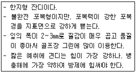
- 버뮤다 그래스
- 켄터키블루 그래스
- 벤트그래스
- 라이 그래스
(정답률: 80%)
34. 다음 중 벌개미취의 꽃색으로 가장 적합한 것은?
- 황색
- 연자주색
- 검정색
- 황녹색
(정답률: 70%)
35. 수목 뿌리의 역할이 아닌 것은?
- 저장근 : 양분을 저장하여 비대해진 뿌리
- 부착근 : 줄기에서 새근이 나와 가른 물체에 부착하는 뿌리
- 기생근 : 다른 물체에 기생하기 위한 뿌리
- 호흡근 : 식물체를 지지하는 기근
(정답률: 81%)
3과목: 조경 시공 및 관리
36. 생물분류학적으로 거미강에 속하며 덥고, 건조한 환경을 좋아하고 뾰족한 입으로 즙을 빨아먹는 해충은?
- 진딧물
- 나무좀
- 응애
- 가루이
(정답률: 69%)
37. 다음 노목의 세력회복을 위한 뿌리자르기의 시기와 방법 설명 중 ( )에 들어갈 가장 접합한 것은?
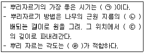
- (ㄱ) 월동 전, (ㄴ) 5~6, (ㄷ) 45~50㎝, (ㄹ) 위에서 30°
- (ㄱ) 땅이 풀린 직후부터 4월 상순, (ㄴ) 1~2, (ㄷ) 10~20㎝ (ㄹ) 위에서 45°
- (ㄱ) 월동전, (ㄴ) 1~2, (ㄷ) 직각또는 아래쪽으로 30° (ㄹ) 직각 또는 아래쪽으로 30°
- (ㄱ) 땅이 풀린 직후부터 4월 상순, (ㄴ) 5~6, (ㄷ) 45~50㎝ (ㄹ) 직각 또는 아래쪽으로 45°
(정답률: 71%)
38. 수량에 의해 변화하는 콘크리트 유동성의 정도, 혼화물의 묽기 정도를 나타내며 콘크리트의 변형능력을 총칭하는 것은?
- 반죽질기
- 워커빌리티
- 압송성
- 다짐성
(정답률: 70%)
39. 우리나라에서 발생하는 주요 소나무류에 잎녹병을 발생시키는 병원균의 기주로 맞지 않는 것은?
- 소나무
- 해송
- 스트로브잣나무
- 송이플
(정답률: 73%)
40. 다음 중 한 가지에 많은 봉우리가 생긴 경우 솎아 낸다든지, 열매를 따버리는 등의 작업을 하는 목적으로 가장 적당한 것은?
- 생장조장을 돕는 가지 다듬기
- 세력을 갱신하는 가지 다듬기
- 착화 및 착과 촉진을 위한 가지 다듬기
- 생장을 억제하는 가지 다듬기
(정답률: 70%)
41. 조경수목의 단근작업에 대한 설명으로 틀린 것은?
- 뿌리 기능이 쇠약해진 나무의 세력을 회복하기 위한 작업이다.
- 잔뿌리의 발달을 촉진시키고, 뿌리의 노화를 방지한다.
- 굵은 뿌리는 모두 잘라야 아랫가지의 발육이 좋아진다.
- 땅이 풀린 직후부터 4월 상순까지가 가장 좋은 작업시기다.
(정답률: 87%)
42. 실내조경 식물의 잎이나 줄기에 백색 점무늬가 생기고 점차 퍼져서 흰 곰팡이 모양이 되는 원인으로 옳은 것은?
- 탄저병
- 무름병
- 흰가루병
- 모자이크병
(정답률: 83%)
43. 표준품셈에서 조경용 초화류 및 잔디의 할증율은 몇 %인가?
- 1%
- 3%
- 5%
- 10%
(정답률: 76%)
44. 다음 중 이식하기 어려운 수종이 아닌 것은?
- 소나무
- 자작나무
- 섬잣나무
- 은행나무
(정답률: 71%)
45. 잔디의 뗏밥 넣기에 관한 설명으로 가장 부적합한 것은?
- 뗏밥은 가는 모래 2, 밭흙 1,유기물 약간을 섞어 사용한다.
- 뗏밥은 이용하는 흙은 일반적으로 열처리하거나 증기소독등 소독을 하기도 한다.
- 뗏밥은 한지형 잔디의 경우 봄, 가을에 주고 난지형 잔디의 경우 생육이 왕성한 6~8월에 주는 것이 좋다.
- 뗏밥의 두께는 30㎜ 정도로 주고, 다시 줄 때에는 일주일이 지난 후에 잎이 덮일 때까지 주어야 좋다.
(정답률: 76%)
46. 조경관리에서 주민참가의 단계는 시민 권력의 단계, 형식참가의 단계, 비참가의 단계 등으로 구분되는데 그중 시민권력의 간계에 해당되지 않는 것은?
- 가치관리(citizen control)
- 유화(placation)
- 권한 위양(delegated power)
- 파드너십(partnership)
(정답률: 63%)
47. 다음 중 조경수목의 꽃눈분화, 결실 등과 가장 관련이 깊은 것은?
- 질소와 탄소비율
- 탄소와 칼륨비율
- 질소와 인산비율
- 인산과 칼륨비율
(정답률: 66%)
48. 다음 설계도면의 종류에 대한 설명으로 옳지 않은 것은?
- 입면도는 구조물의 외형을 보여주는 것이다.
- 평면도는 물체를 위에서 수직방향으로 내려다 본 것을 그린 것이다.
- 단면도는 구조물의 내부나 내부공간의 구성을 보여주기 위한 것이다.
- 조감도는 관찰자의 눈높이에서 본 것을 가정하여 그린 것이다.
(정답률: 70%)
49. 평판을 정치(세우기)하는데 오차에 가장 큰 영향을 주는 항목은?
- 수평맞추기(정준)
- 중심맞추기(구심)
- 방향맞추기(표정)
- 모두 같다
(정답률: 66%)
50. 다음 중 잔디의 종류 중 한국잔디(korean lawngrass or Zoysiagrass)의 특징 설명으로 옳지 않은 것은?
- 우리나라의 자생종이다.
- 난지형 잔디에 속한다.
- 뗏장에 의해서만 번식 가능하다
- 손상 시 회복속도가 느리고 겨울 동안 황색상태로 남아 있는 단점이 있다.
(정답률: 77%)
51. 다음 중 차폐식재에 적용 가능한 수종의 특징으로 옳지 않은 것은?
- 지하고가 낮고 지엽이 치밀한 수종
- 전정에 강하고 유지 관리가 용이한 수종
- 아랫가지가 말라죽지 않는 상록수
- 높은 식별성 및 상징적 의미가 있는 수종
(정답률: 85%)
52. 농약살포가 어려운 지역과 솔잎혹파리 방제에 사용되는 농약 사용법은?
- 도포법
- 수간주사법
- 입제살포법
- 관주법
(정답률: 70%)
53. 900m2의 잔디광장을 평떼로 조성하려고 할 때 필요한 잔디량은 약 얼마인가?
- 약 1,000매
- 약 5,000매
- 약 10,000매
- 약 20,000매
(정답률: 74%)
54. 다음〔보기〕와 같은 특징을 갖는 암거배치 방법은?
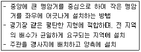
- 빗살형
- 부채살형
- 어골형
- 자연형
(정답률: 84%)
55. 한 가지 약제를 연용하여 살포시 방제효과가 떨어지는 대표적인 해충은?
- 깍지벌레
- 진딧물
- 잎벌
- 응애
(정답률: 65%)
56. 다음 중 메쌓기에 대한 설명으로 가장 부적합한 것은?
- 모르타르를 사용하지 않고 쌓는다.
- 뒷채움에는 자갈을 사용한다.
- 쌓는 높이의 제한을 받는다.
- 2제곱미터마다 지름 9㎝정도의 배수공을 설치한다.
(정답률: 68%)
57. 시설물 관리를 위한 페인트 칠하기의 방법으로 가장 거리가 먼 것은?
- 목재의 바탕칠을 할 때에는 별도의 작업없이 불순물을 제거한 후 바로 수성페인트를 칠한다.
- 철재의 바탕칠을 할 때에는 별도의 작업없이 불순물을 제거한 후 바로 수성페인트를 칠한다.
- 목재의 갈라진 구멍, 홈, 틈은 퍼티로 땜질하여 24시간후 초벌칠을 한다.
- 콘크리트, 모르타르면의 틈은 석고로 땜질하고 유성 또는 수성페인트를 칠한다.
(정답률: 77%)
58. 옹벽 중 캔틸레버(Cantilever)를 이용하여 재료를 절약한 것으로 자체 무게와 뒤채움한 토사의 무게를 지지하여 안전도를 높인 옹벽으로 주로 5ｍ 내외의 높지 않은 곳에 설치하는 것은?
- 중력식 옹벽
- 반중력식 옹벽
- 부벽식 옹벽
- L자형 옹벽
(정답률: 61%)
59. 형상수(topiary)를 만들 때 유의 사항이 아닌 것은?
- 망설임 없이 강전정을 통해 한 번에 수형을 만든다.
- 형상수를 만들 수 있는 대상수종은 맹아력이 좋은 것을 선택한다.
- 전정 시시는 상처를 아물게 하는 유합조직이 잘 생기는 3월 중에 실시한다.
- 수형을 잡는 방법은 통대나무에 가지를 고정시켜 유인하는 방법, 규준틀을 만들어 가지를 유인하는 방법, 가지에 전정만을 하는 방법 등이 있다.
(정답률: 85%)
60. 다음 중 루비깍지벌례의 구제에 가장 효과적인 농약은?
- 페니트로티온수화제
- 다이아지논분제
- 포스파미돈액제
- 옥시테트라사이클린수화제
(정답률: 42%)